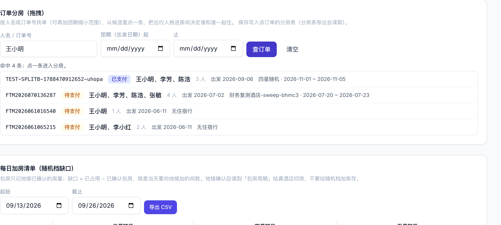
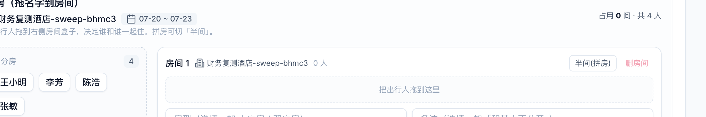
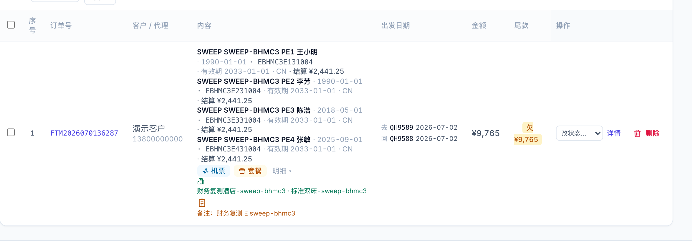
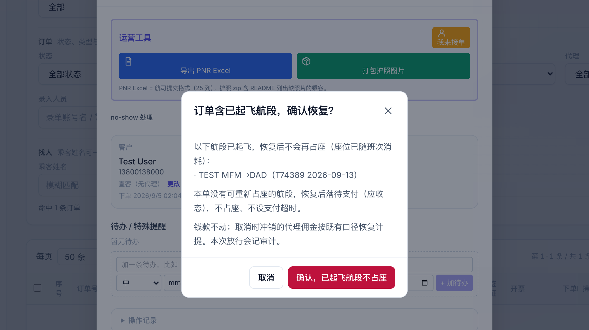
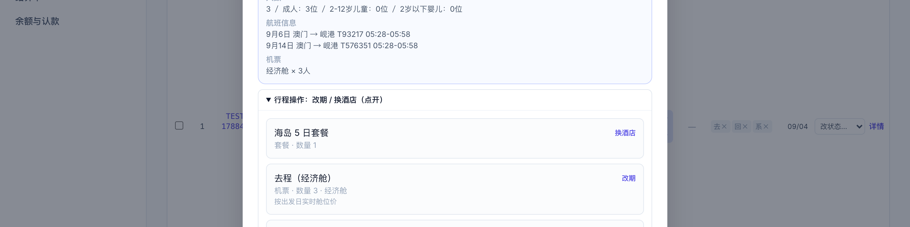
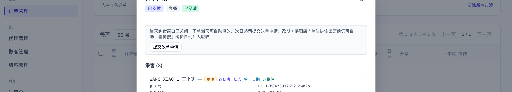
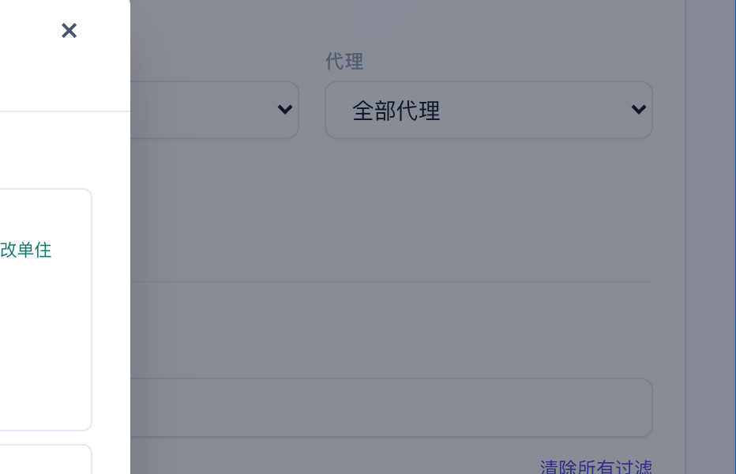
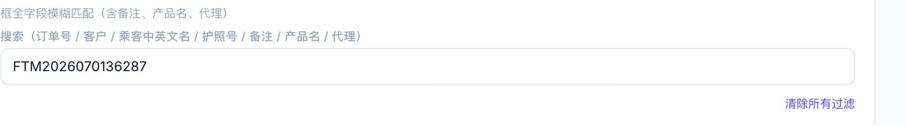

分房中文名与找单 · 每人结算价 · 0911 遗留五条 · 代理自助改期换酒店单住 · 星级导出 · 搜索备注 · 2026-09-13
解决了什么：分房弹窗里以前只显示拼音名，认人要对护照；房控页的「订单分房」只能先拿到订单号再查。现在分房弹窗按中文名显示（鼠标停上去看拼音全名），房控页可以直接输人名或订单号、再加团期（出发日期区间）把候选单列出来，点一条进去分。

房控页 → 订单分房：按人名找单，列出候选

分房编辑器：乘客按中文名显示
解决了什么：以前每人结算价只在订单详情的「价格调整」区有一张表，列表上看不到。现在订单列表「内容」列每位乘客那一行末尾直接显示「结算 ¥X」，全员加起来等于整单应收，不用点进去。

订单列表内容列：一人一行，行末是这个人的结算价；最下面一行是备注
三个人拖进一个房间盒子现在就能保存，只是系统没有"三分之一间"的算法：房费仍按两人一间加单房差算，房控也按两人一间算房量。要真做要动库存、房控、拆单和五张导出表，所以想先问清楚：
回了再定做不做、怎么做。
换人或改乘客信息让乘客在「婴儿」和「成人 / 儿童」之间变动时，系统在同一笔操作里自动加减该单的机位：成人改婴儿放一个座，婴儿改成人占一个座。婴儿改成人时如果班次已售罄会直接拒绝，提示先改期或提交改单申请。金额和乘客人数不变；已起飞的航段不动座位。
已取消 / 支付超时的单，就算有航段已经起飞也能恢复了。点「恢复订单」会多弹一次确认，列出哪些航段已起飞（不再占座）、哪些航段会重新扣座；已起飞的段不占座，只对没飞的段扣座，余位不够照旧会再问一次超售。全部飞完的单：付清的直接变「已完成」，没付清的回到待支付催款、不占座、不会再自动超时。

恢复含已起飞航段的单：第二道确认，写清哪些段不再占座
订单列表内容列和展开的乘客明细里，证件号现在显示完整号码，不用再点进详情核对。代理登录看自家单也是全号（他们本来在详情和导出里就能看到）。导出给代理的名单模板仍按原来的口径裁掉证件列，没有变。
套餐批量创单的名单里，「结算价 / 人」这一列之前就是保存前填的，这次补上参照：选好套餐和出发日期后，每行输入框的灰字变成「留空 = ¥X」（系统会按这一行的单住 / 自备签 / 升舱 / 指定酒店 / 成人儿童算出这个人的价），下面小字显示「系统价 ¥Y」；填了价之后显示与系统价的差额；名单下方有汇总条「已填 N 人 合计 ¥A · 系统价 ¥B · 差额 ±¥C」。某一行差额超过上限会红字提示并拦住提交。
解决了什么：代理以前只能在下单当天做同航班同价的纠错，套餐单的换酒店按钮又被藏在内部明细里根本看不到。现在代理对自家（含下级）的单，出票前随时可以：
| 动作 | 入口 | 钱怎么算 | 限制 |
|---|---|---|---|
| 改期（含按人改期） | 订单详情 → 行程操作（点开）→ 机票行「改期」 | 差价按新旧班次系统价自动算，计入应收，可正可负 | 已出票 / 已开票 / 已订座的单不能自助，请提交改单申请；已起飞航段不能改 |
| 换酒店（含指定酒店） | 行程操作 → 住宿行「换酒店」 | 同档次内按指定酒店加价 / 房型价差自动算 | 只能换同星级；升降星走「申请改档」；随机档落位找运营 |
| 酒店改期 | 行程操作 → 住宿行「改期」 | 按本行每晚价 × 晚数变化自动算 | 入住日已到不能自助 |
| 改单住 / 改拼住 | 乘客卡片 → 「改单住」/「改拼住」 | 按建单时的单房差费率 × 晚数自动补收或退 | 已入住 / 已完成 / 已取消不可改；婴儿不能单住 |

代理视角：套餐单的「行程操作」点开后能看到「换酒店」「改期」

「提交改单申请」按钮现在随时都在，不用等自助窗口关闭

乘客卡片上的「改单住 / 改拼住」（运营与代理都能用）
怎么回事：那张单是套餐从四星改成了三星。改档只改了套餐行，没同步刷新分房表里记的酒店名，而导出的「酒店类型」列优先取分房表，所以印出的还是「四星 2天1晚」。
现在：改档后分房表房组、机票航段描述会一起跟着改；随机档没落位的行在分房表、导出里统一显示「X星随机（待落位）」，不再把套餐名当酒店名。存量已经错的单要等上线后跑一次纠正脚本，之后重新导出就对了（房控手填的真实酒店名不会被动）。
订单列表的大搜索框其实一直能搜备注（六栏都搜），只是没有写出来。现在搜索框说明写清楚了：订单号 / 客户 / 乘客中英文名 / 护照号 / 备注 / 产品名 / 代理，顺带把「搜代理名」真正接上了（之前标着代理其实搜不到）。

搜索框：可搜备注、产品名、代理名